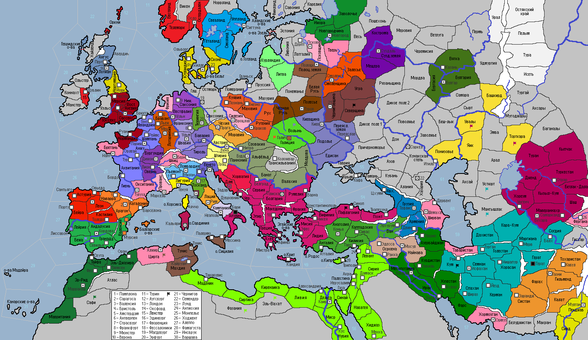

<== | 1 | | 2 | | 3 | | 4 | | 5 | | 6 | | 7 | | 8 | | 9 | | 10 | | 11 | | 12 | | 13 | ==>
Клюнийская реформа
Клюнийская реформа - движение за реформу монашеской жизни в Западной церкви в X—XI веке, центром которого было Клюнийское аббатство - возникло как протест против падения нравственности монашества и духовенства, против вмешательства светских властей в церковную жизнь, за строгое соблюдение монашеских уставов и целибата духовенства. [-5 о/в у стран-католиков, +1% к Благочестию от Монастыря]
· Степняки вторгаются в провинцию Северщина, подвергая её разорению.. · Войска Фатимидов захватывают Фазанию, флот грабит берега Прованса. · Псковская дружина во главе с князем Глебом I Воителем отражает удар балтийских язычников, вознамеривавшихся захватить земли княжества. · Гюлус I – новый правитель Табаристана. · Сиджифредо Каносса взошел на трон Флорентийского графства. · Император СРИ Танкмар I принимает закон «О постоянном рейхстаге». Имперская армия наносит поражение варварам в Саксонии. · Ипполит из рода Горянски – новый бан Хорватии. · Матье I принимает управление герцогством Лотарингия. · Швабия и Богемия заключают оборонительный союз. · Новым императором Византии избирается Андроник Исавр. Однако, болезнь и почтенный возраст сломили здоровье императора, и он умирает в конце 1020 года… Происходят восстания рабов в г.Бари и Пафлагонии. Войска империи захватывают провинцию Хорватия. · В Швеции продолжается междуцарствие… Ни один из трех сыновей умершего короля Швеции не может прийти к власти. · Богемия объявляет войну Силезии и вторгается на территорию соседнего гос-ва. Силезская армия князя Власта II одерживает верх над неприятелем. · В 1020 году в Неаполе строится новый порт Беверелло. · Царь Киевский Ярослав Старый умирает, завещав трон сыну Владиславу. · Шотландцы проигрывают сражение пиктам Хайленда. · Венецианцы открывают факторию в г.Дубровник. · Жители Крита подали прошение о принятии их под покровительство Византийским императором, что было великодушно удовлетворено базилевсом. · Зириды нападают на Алжир и выигрывают сражение у местного ополчения. Столица страны взята в осаду. · Папа Римский придает анафеме Венецианскую республику за «богомерзкое пиратство, подстрекательство к войне против последователей истинной веры и войны против истинного католика». · Король Франции Гуго II умирает… На трон восходит младший сын короля – Гийем I Славный. Французская армия захватывает Лейрию и Бежу, не встречая сопротивления сарацин. · Восстание рабов в провинции Кум! Сельджуки захватывают провинцию Устюрт. · Войска Кордовского халифата освобождают Лейрию от французской оккупации. · Талантливый военачальник Марко Барбариго получил отворот поворот при выборах дожа Генуи. «Ноги моей больше не будет в этом проклятом городе!» - воскликнул несостоявшийся правитель республики и отбыл в неизвестном напралении. · «За Всеволода!» - кричал народ Новгорода на вече, посвященном избранию нового посадника. Так и порешили. Всеволод выступил с речью перед знатью города и показал себя косноязычным балваном. · Половцы оставляют разоренную войной провинцию Эмба и переселяются в Башкирд. Подавлено восстание в провинции Увалы. · Суздальцы отражают набег варваров в провинции Мещера. · Фуат I – наследник трона Волжской Булгарии · Герцог Баварии Людвиг II, слыл свое рода гуманистом, что было редкостью для жестокого 11 века. По его настоянию в стране приветствовалась благотворительность, народ получил максимум свобод, а сам он искренне поддерживал меценатство. · Армия Газневидов освобождает столицу страны от взбунтовавшихся рабов. · Тобга-хан наследует трон государства Караханидов. Армия хана нагоняет половецкие силы в провинции Увалы и наносит им поражение. · Датчане доплыли до берегов Африки и стали грабить побережье гос-ва Альморавидов. · Основан новый город: Казань (Булгария)